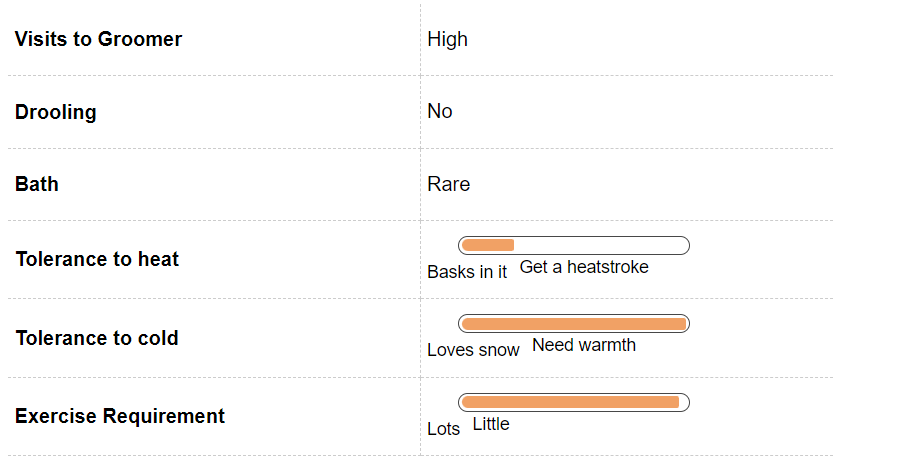
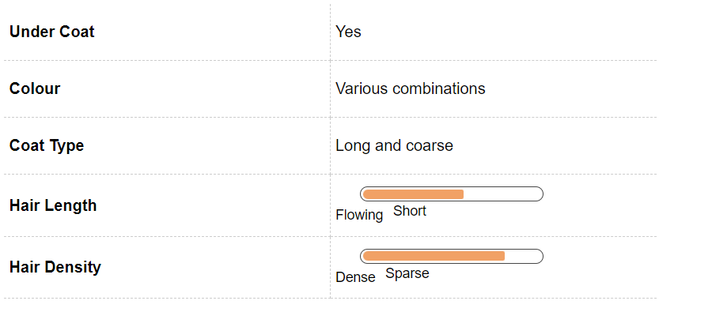
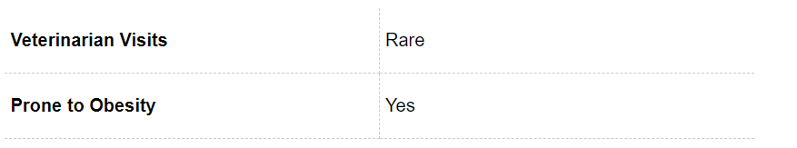
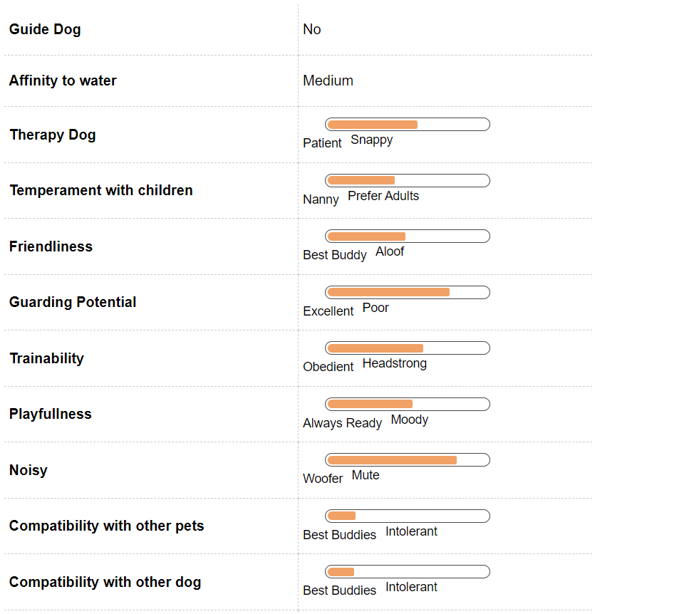
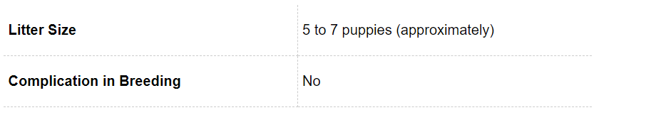
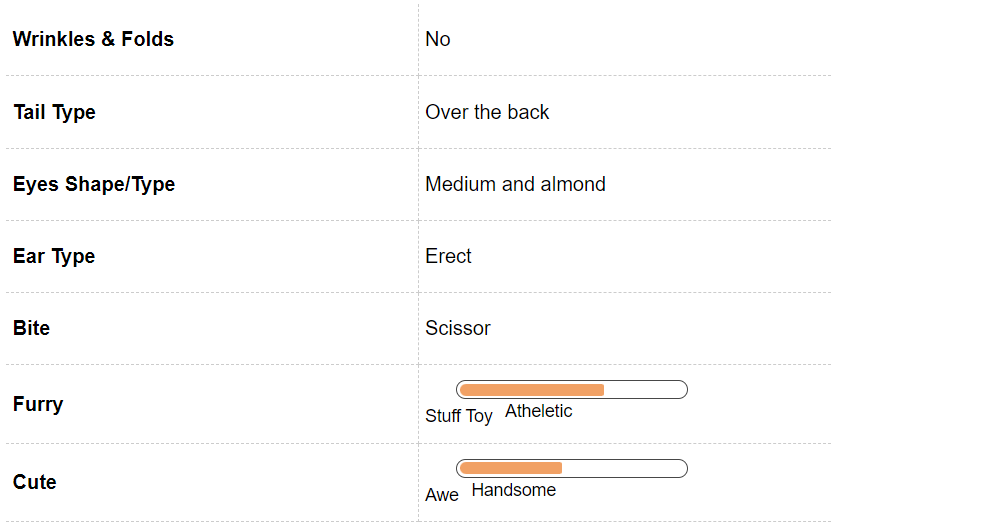

Alaskan Malamute Dog Breed Information
Introduction
An Alaskan Malamute is one of the strongest and the largest of Alaskan or Arctic Dog Breeds. Hailing from a proud heritage of an intelligent and tireless canine, Alaskan Malamutes have won the hearts of many over the world with their strong disposition and endurance. An Alaskan Malamute got its recognition in the world when George Lucas, while making Star Wars, portrayed the character of Chewbaca on his favourite pet Alaskan Malamute. Another famous character - Indiana Jones - is named after George Lucas’s pet Malamute - Indiana. The hollywood movie - Eight Below - too has Alaskan Malamutes working alongside Siberian Huskies to make a heartwarming movie of the courage and determination of 8 dogs to survive. Alaskan Malamutes are often confused with another sled pulling dog breed, namely the Siberian Husky, due to their identical coats colours. However, that is the only thing common between a Siberian Husky and an Alaskan Malamute. An Alaskan Malamute is a much larger breed than a Siberian Husky and is capable of pulling large and heavy loads across the snow.Blessed with an independent, intelligent and strong personality, Alaskan Malamutes have been known to have survived the harshest of winters where temperatures have gone 70 degrees below zero, and have adapted themselves to their environment. This strong breed can fend for itself and hunt his own food without having any human supervision. If you are a proud owner of this majestic breed or if you are planning to get an Alaskan Malamute as a family pet, you are making a wise decision. We bring to you all the aspects that you will have to keep in mind before getting a Malamute so that you are able to provide an environment that develops a healthy dog and a long lasting companionship.
History
The Alaskan Malamute is the national dog of Alaska and its origins go back to the times of early explorers. While exploring the land of Alaska, explorers came across dogs that were unbelievably strong and were able to work in harsh climate often on little or no diet. Originally used to pull sleds or cargo over long distances and to hunt bears and seals, these dogs were very good companions of the Eskimo families that would adopt them as companions. When not hunting or pulling sleds, the Malamutes would play with the children and keep the family warm.During the Gold Rush of 1896, there was an influx of dogs to Alaska due to new settlers and many were bred with imported breeds. The Malamutes continued to be the strongest of the dogs and were used mainly for pulling the sled. The Mehlemuts, a local tribe of Alaska after whom the breed is named, lived in isolation from the new settlers and hence they were able to keep the Malamutes as pure breeds.
Unique Aspects
A Malamute has tremendous strength, endurance, intelligence and energy and despite their wolf like facial appearance, they are gentle and friendly.A Malamute has two layers of coats. The inner coat is wooly and oily and short that helps provide insulation against the harsh winter. The inner coat is also water and snow repellent; so in case they are caught in a snowstorm or rain, they can still stay warm. The outer coat is longer than the inner coat and coarse in nature. Malamutes shed their coat at least twice a year and your entire house can become a snow globe due to all the fur. Regular grooming and brushing of the coat is imperative for this breed.Since they pull weight and sleds, Malamutes have a very dense musco-skeletal structure especially at their chest and legs. A broad chest and strong legs are extremely useful during climbing mountainous regions or while pulling heavy load across the snow. One of the most unique aspects of an Alaskan Malamute is their bear - like paws. Also called “snow shoes” the paws of the Malamute have broad pads that act like snowshoes. The claws or nails are retractable, just like cats and help provide stronger grip in the snow. Unlike other dogs, Alaskan Malamutes rarely bark and their bark is more of a howl or a woo woo as compared to any other dog.
Fun Trivia

One of the most famous and celebrated Alaskan Malamute of all times is George Lucas’ pet called Indiana Jones. This amazing character inspired Chewbacca and was also a movie by the same name called Indiana Jones.
Movie Character
This majestic and friendly breed has been a part of many Hollywood movies. The list is prolific and exhaustive. This includes movies such as Eight Below, Antarctica, Indiana Jones and the Last Crusade, Iron Will, Kayla: A Cry in the Wilderness, The Lost Boys, Niki, Wild Dog of the North, On Deadly Ground, The Thing From Another World and White Fang 2: Myth of the While Wolf.
Celebrity Alaskan Malamute owners
There are various celebrities that have been smitten by the beauty of this majestic breed, this include singer Judy Collins, Actors Dom DeLuise, Melissa Gilbert and Cheryl Ladd. They were even white house residents under the regin of Herbert Hoover. Robin Williams the comedian and actor also has a Alaskan Malamute. The famous dog trainer and author Ian Dunbar and Vida Blue the baseball pitcher all our proud owners of a Malamute.
Vital Stats:
Dog Breed Group:
Working Dogs
Height:
29-32
Inches
Weight:
32-43
Kg
Life Span:
13 to 14 years
Pros and Cons
| Pros |
Cons |
|
Excellent family pet
|
Grooming will need regular effort
|
|
Great working dog
|
Does not adapt well to hot temperature
|
|
Looks majestic
|
Not for first time owners
|
Alaskan Malamute Maintenance & Effort

Grooming
Alaskan Malamute is a big and furry dog that has a double coat, which is woolly in texture. The undercoat sheds all year round and more so twice a year when your entire house can turn into a giant snow globe. So if you do not want to see hair around you then this is not the right breed you. If you have or want to get a Malamute then getting that vacuum cleaner is not an option but a necessity.
You will need to brush the coat at least two to three times a week and in shedding season almost every day to keep your house hair free. These sled dogs will rarely need a bath and do not have that distinct doggy odor. They are more cat like in this aspect and keeps themselves clean.
In addition to this you will need to follow a regular grooming regime with your pet that is brushing the teeth of your Alaskan Malamute, this should be done at least once on a weekly basis as this will help to remove the tartar buildup and ensure a fresh breath at all times. This will also prevent various gum diseases.
The toe nails will require clipping on regular basis to prevent any problems further as dog nails have veins in them and if it gets chipped then it can be very painful for your pet. You should always start this grooming regime in your pet from an early age as this will ensure that he is not temperamental when someone touches his or her feet, mouth or ear at a later stage
Alaskan Malamute Hair & Coat

Alaskan Malamute Health & Care

Common Health Issues
Alaskan Malamutes are generally a healthy breed of dogs, however, like all large breeds they are prone to certain health conditions. While getting a puppy, it will be imperative to get all medical clearances for the dog especially if there are any genetic conditions that may affect the dog as it grows up. A medical record of the puppy’s parents can also be assuring. As common with all large breeds, Alaskan malamutes are prone to developing Canine Hip Dysplasia, a condition where the hip joint is not aligned properly with the bone which may bring discomfort to the dog especially during walking or pulling sleds. Canine Cataracts are another condition that inflict Malamutes. If left untreated, it may lead to complete blindness. However, once Canine Cataract has been diagnosed, these dogs should not be bred as one of the reasons of cataract may be genetic. Hypothroidism can also affect Malamutes as a result of which there is an abnormal release of hormones. The dog may be lethargic at all times, or have a dull coat with mental dullness and discharge from mucous membranes. Blood tests will be able to diagnose the illness and medications will have to be administered for life.
Alaskan Malamute Behavior

Temperament
Alaskan Malamutes are one of the most friendly, intelligent, affectionate and loving companions. Being highly independent in nature, they have to be nurtured with mental and physical exercise regimes that suit their overall growth. Malamutes make very good family pets as they are very good with humans and also with children. Since they are so affectionate they do not really make good guard dogs. They are extremely nimble around furniture and can be easily kept inside the house. Malamutes love being in a pack and thrive on ample amount of exercise and playtime else they can get bored and destructive due to all the energy in them. Malamutes are genetically designed to prey as they have survived harsh winters where they fend for their own food. Due to the same reason, owners will have to keep or maintain a strong fence so that their pet Malamute does not dig and escape to hunt or run. Due to their size and strength, obedience and house training should start from an early age so that as they grow up, they are mellowed down and are used to the surroundings they live in.
Environment
Alaskan malamutes are big dogs and hence not suitable for apartment living as they require ample space to run and exercise. Since Malamutes are sled dogs and used to snow, they do not fare well in humid and hot conditions. In case you are staying in an area where there is harsh summer, you might want to get air conditioning set up in the house for your Malamute. Malamutes will require early socialisation with other pets and children in the house so that their ample energy does not harm the pets and children. As parents you will have to teach your children to be a little cautious especially around this dog. A house with a big garden or yard will be suitable for Malamutes as they are active dogs and need space to run and play. In case you stay in an apartment, you will have to define a exercise and play regime that includes a lot of running for the Malamute.
Training & Intelligence
Alaskan Malamutes are a high energy and highly intelligent dog breed and therefore not very difficult to train. Malamutes do well when they are mentally and physically engaged at all times. Pet parents should begin training their puppy Malamutes right from the start so that they can learn obedience and keep their energy levels under control. Malamutes are pack animals and it is imperative that they understand that the pet parents as the leader of the pack especially for effective training. It will also be important that Malamutes are trained on leashes early on as they are genetically built to run and prey. Being highly intelligent dogs, early crate training will help them learn quickly especially house training. One will have to make sure that the puppy sees the crate as his home and not a form of punishment. Procreation Alaskan Malamute is a healthy breed and can be bred easily. An Alaskan Malamute becomes mature at around 18 months. This is also the time when the Malamute attains its full height and body structure. First time owners may have to seek help of the veterinary for mating and post natal care. A malamute will have a litter of 6 - 9 puppies on an average. Puppies An Alaskan Malamute can have a litter of 6 - 9 puppies. The puppies are a bundle of energy and have to be house trained and exercised so that they do not get bored and become destructive. Temperament wise, Malamute puppies are calm and enjoy human interaction. It will be imperative for pet parents to socialise the puppy from an early age. Since these dogs are genetically engineered to prey and hunt for their food, do not be surprised if you see your puppy digging in the garden or the yard or chasing small animals like squirrels or rabbits.
Alaskan Malamute Breeding

Procreation
Alaskan Malamutes are generally a healthy breed and their breeding does not have many complications attached. The only thing you have to think about is giving the adorable puppies up for sale or adoption. Average male and female Malamutes attains sexual maturity anywhere between six to nine months of age. Though your pet is still very young to breed.
A dog takes around 18 months to reach his or her full height and structure. It is advisable to breed your dogs after at least two years of age. If you are a first timer at breeding then taking vets help is advisable. You just sit back and enjoy the company of six to nine adorable little puppies. An average litter size of the breed.
Puppies
The Alaskan Malamutes puppies just like their adult counterparts are an energy bundle so be on a constant run when you get this breed home. If the energy is not expelled properly then it can turn into destructive behaviour.
The Malamute puppy has an even temperament and will not be temperamental when people come and hold him. It is very important to socialize the puppy with various different people and sounds to ensure a proper growth.
The Malamutes are an intelligent breed, the earlier you start training the better it is for you. Persistence and a little effort can make training a very rewardign experience with this breed, which becomes a necessity because of their large frame.
The other thing that needs to be kept in mind that this breed was developed in the harsh conditions of Alaska and have a strong prey drive as food was hard to find in that area. They still retain that drive, so do not be surprised when this little puppy is chasing small animals around the house or the yard.
As soon as the puppy is three months old you will have to train him to walk on a leash as this breed will love to run and their preying instinct can at times lead to some untoward situation.
Alaskan Malamute Appearance

Body
An Alaskan Malamute is a hard and sturdy dog with a powerful built. With a deep chest and straight back, heavy and muscular legs, an Alaskan Malamute is genetically designed to face the harshest of weather. The coat of a Malamute is in two layers - a dense short coat that is oily and water resistant and a longer coat to provide insulation against the harsh cold. The paws of a Malamute are like snow shoes and help provide a strong grip in the snow. They have cat like claws that can be retracted especially in soft snow. Care would have to be taken especially in grooming and clipping of the nails to avoid discomfort to the dog. The tail of a Malamute is set high and curls slightly on the back. The black nose helps the Malamute protect itself against cold and sunburn. The ears are small and stand erect on the broad skull. The muzzle of a Malamute is not very big. They have almond shaped eyes which may be brown, blue or grey in colour. The coat of the Malamute may brown or grey or black in colour and sheds a lot. If you are a Malamute owner, you might want to be regular with grooming and brushing of the fur. These sled dogs do not need regular baths - like cats they tend to groom themselves. The Malamute has a strong jaw and one would have to take care of brushing the teeth at least once a week to avoid tartar buildup and tooth infections